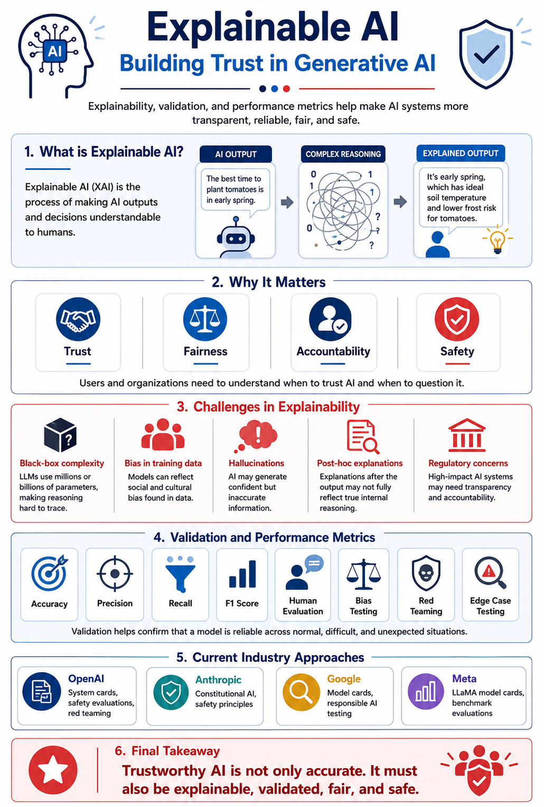

Artifact 9 - Explainable AI: Building Trust in Generative AI
Introduction: This artifact presents a visual explanation of Explainable AI, also known as XAI, and how it supports trust in generative AI systems. It focuses on large language models such as GPT, Claude, Gemini, and LLaMA, which can generate powerful responses but are often difficult to interpret because of their complex internal structures.
Explainable AI is important because users, organizations, and decision-makers need to understand how AI systems produce outputs, especially when those outputs influence high-impact areas such as healthcare, finance, education, law, hiring, and business operations. This artifact connects explainability with validation, performance metrics, safety testing, and responsible AI practices.
Objective
- Define Explainable AI in a clear and non-technical way.
- Explain why transparency is important when using generative AI systems.
- Identify major challenges in interpreting outputs from large language models.
- Show how validation methods and performance metrics improve trust and reliability.
- Summarize current industry efforts used by OpenAI, Anthropic, Google, and Meta to improve AI transparency.
- Create a professional visual artifact that communicates responsible AI concepts clearly.
Artifact Visual Framework
The infographic below explains Explainable AI using a structured visual framework. It begins by defining XAI as the process of making AI outputs and decisions understandable to humans. It then explains why explainability matters by connecting it to trust, fairness, accountability, and safety.
The visual also highlights common challenges in explaining large language models, including black-box complexity, hallucinations, bias in training data, post-hoc explanations, and regulatory concerns. The second half of the artifact shows how validation methods and performance metrics help evaluate reliability. It also summarizes industry approaches such as system cards, model cards, red teaming, safety evaluations, constitutional AI, and benchmark testing.

Figure 1. Explainable AI: Building Trust in Generative AI
Key Concepts Explained
Explainable AI
Explainable AI focuses on making model outputs understandable so users can better evaluate whether an AI response is reliable, fair, and appropriate.
Transparency
Transparency helps users understand the factors, limitations, and uncertainty behind AI-generated outputs instead of treating the model as a perfect authority.
Validation
Validation tests whether an AI model performs reliably across new data, unusual prompts, bias tests, adversarial inputs, and edge cases.
Performance Metrics
Metrics such as accuracy, precision, recall, F1 score, human evaluation, and red teaming help measure model quality and identify areas for improvement.
Challenges in Explainability
Generative AI models are challenging to explain because their outputs come from complex, non-linear relationships learned from large datasets. Unlike a simple rule-based system, a large language model does not usually provide one clear reason for its response. This creates a black-box problem where the output may be useful, but the reasoning behind it is difficult to verify.
- Black-box complexity: LLMs use millions or billions of parameters, making it hard to trace a single explanation for an output.
- Post-hoc explanations: Explanations may be created after the output and may not fully represent the model’s actual internal process.
- Bias in training data: Models can reflect social, cultural, or historical biases found in the data used during training.
- Hallucinations: Models may generate incorrect information that sounds confident and well-written.
- Regulatory concerns: In high-impact fields, organizations may need to explain how AI-supported decisions are made.
Validation and Performance Metrics
Validation and performance metrics are important because explainability alone does not prove that a model is reliable. A model must also be tested to ensure that it performs well across different inputs, users, and situations. Validation methods help confirm whether a model generalizes beyond the examples it was trained on.
- Accuracy: Measures how often the model is correct overall.
- Precision: Measures how often the model is correct when it makes a positive prediction.
- Recall: Measures how well the model finds all actual positive cases.
- F1 Score: Balances precision and recall into one combined metric.
- Human Evaluation: Uses human reviewers to judge usefulness, safety, clarity, and accuracy.
- Red Teaming: Tests the model with difficult or adversarial prompts to find weaknesses.
- Bias and Edge Case Testing: Checks whether the model behaves fairly and consistently across different groups and unusual scenarios.
Industry Approaches to Explainability
Leading AI organizations use different approaches to improve transparency and responsible AI development. These methods do not completely solve the explainability problem, but they help users, researchers, and organizations better understand model behavior and limitations.
- OpenAI: Uses system cards, red teaming, safety evaluations, and model behavior testing to document risks and limitations.
- Anthropic: Uses Constitutional AI and safety principles to guide model behavior and improve harmlessness.
- Google: Uses model cards, responsible AI practices, and evaluation documentation to communicate model performance and limitations.
- Meta: Publishes LLaMA model cards and benchmark evaluations to provide transparency about model capabilities and risks.
Artifact-Specific Value Proposition
This artifact demonstrates my ability to communicate complex AI concepts in a clear and professional way. It shows my understanding of Explainable AI, generative AI limitations, validation techniques, model evaluation, responsible AI practices, and visual communication.
The artifact is valuable because explainability is becoming increasingly important in AI-related careers. Employers need professionals who can not only work with AI tools but also understand how to evaluate their reliability, communicate their limitations, and support ethical implementation.
Customization for Audience
This artifact was designed for students, instructors, and future employers who may not have deep technical knowledge of generative AI. I used simple language, short sections, and a visual layout to make the topic accessible. Instead of focusing only on technical formulas, the artifact explains how explainability, validation, and performance metrics work together to build trustworthy AI.
The design also supports portfolio use because it presents technical understanding in a clean and professional format. This helps demonstrate both AI/ML knowledge and the ability to communicate clearly with non-technical stakeholders.
Reflection
I chose this topic because Explainable AI is one of the most important areas in modern artificial intelligence. As generative AI systems become more common, users need to know when to trust an AI response, when to question it, and how to evaluate its reliability. This artifact helped me connect model explainability with validation, performance metrics, and responsible AI practices.
Through this artifact, I learned that trustworthy AI requires more than producing fluent or impressive answers. A reliable AI system should be explainable, validated, fair, safe, and monitored. I also learned that performance metrics such as accuracy, precision, recall, and F1 score are not just technical measurements. They help organizations understand whether AI systems are dependable enough for real-world use.
Feedback and Revisions
This artifact was reviewed for clarity, structure, and visual organization. I focused on making the explanation understandable for a broad audience while still including important AI/ML concepts. I revised the content by simplifying technical language, grouping related ideas together, and making the visual artifact easier to follow.
The final version connects the major parts of trustworthy AI: explainability, validation, performance metrics, bias testing, red teaming, and industry transparency efforts. These revisions helped make the artifact more professional and suitable for my AI/ML portfolio.
References
- Anthropic. (n.d.). Constitutional AI and model safety resources.
- Google DeepMind. (n.d.). Model cards and responsible AI documentation.
- Meta. (n.d.). LLaMA model cards and benchmark evaluation resources.
- OpenAI. (n.d.). System cards, red teaming, safety evaluations, and responsible AI resources.
AI Usage Statement
Generative AI tools were used to support brainstorming, outlining, and improving the organization of this portfolio artifact. I used AI assistance to help clarify concepts related to Explainable AI, validation, performance metrics, and responsible AI practices. The final content was reviewed, edited, and completed by me based on my understanding of AI explainability, model evaluation, and trustworthy generative AI systems.